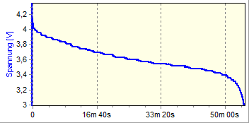
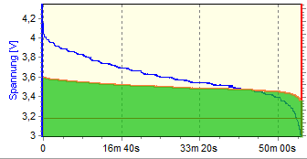

О терминологии
А (Ампер(A), или миллиампер — мА, микроампер — мкА) — значение силы тока в проводницеке. Может быть как большим, так и маленьким. Ток в 100А может сваривать листы железа, но взяв в руки провода от БП 5В 100А, вы ничего не почувствуете, потому что никаких 100А через вашу кожу не пройдет — сопротивление тела слишком большое для прохождения тока.
В ( Вольт(V), или милливольт — мВ, микровольт — мкВ) — значение напряжения. Большое напряжение создаст длинную искру, но при маленьком токе источника вас только треснет, но никак не превратит в горстку пепла. Пример — статическое электричество, напряжения составляет до 10кВ, а токи мизерные.
Ом (Омы(Ohm), или килоом- кОм, мегаом- МОм) — значение сопротивление. Именно высокое сопротивление вашего тела(приблизительно 15 кОм) позволяет вам держать провода из первого пункта. Проходя по проводу, имеющему сопротивление (а все провода имеют сопротивление, и чем провод дальше из провинции китая тоньше, тем оно выше), напряжение падает на определенную величину, которая зависит от силы тока. Поэтому для обогревателя нужен толстый провод, а для лампочки — тонкий, хоть напряжение в обоих случаях 220В. Применительно к аккумуляторам и батареям(да и вообще ко всем источникам тока), можно говорить о внутреннем сопротивлении. Это сопротивление не даст вам получить большой ток за малое время, хотя аккумулятор при коротком замыкании очень к этому стремится — возникающая искра при замыкании клемм это как раз несколько ампер тока при напряжении меньше вольта. Связано это с тем, что скорость ионов внутри аккумулятора не очень велика. Вязнут, бедняжки, по колено в полимере
Вт (Ватт(W), или милливатт — мВт, дальше вы поняли, да?) — в простейшем представлении мощность постоянного тока, вычисляемая умножением вольт на амперы. К примеру, БП ноутбука, который выдает 3А при напряжении в 20В, и лабораторный блок питания, выдающий 3В, при токе в 20А, отдадут в нагрузку одинаковую мощность в 60Вт. Потребят из сети они больше, из-за того, что их КПД не 100% — часть энергии перейдет в тепло.
Вт·ч (Ватт-час) — мера энергии. Из названия должно быть понятно, что 1 Вт·ч — это энергия, которую кто-то получит(или отдаст), принимая(или отдавая) мощность в 1Вт в течении часа. Или 60Вт в течении минуты. Вот тот БП выше, он как раз отдает каждый час 60Вт·ч. Вот это «правильная» емкость, которая не дает информации о самом аккумуляторе, но дает полное представление о его емкости.
Еще есть киловатт-часы, кВт·ч — их пишут в квитанциях. Если оставить БП включенным, он выжрет энергии за месяц на 60Вт·ч*24*30 т.е. примерно на 43кВт·ч, или на 73 рубля. Разумеется, то, что выдает блок питания на выходе(те 20В и 3А) должен кто-то потреблять, ну и о КПД не забываем, это я упростил.
А·ч (ампер-часы) — Заряд. Общепринято, хоть и ошибочно называется емкостью. Почему ошибочно? Потому что без напряжения, по одной цифре 5А·ч нельзя ничего понять — это говорит лишь о том, что например аккумулятор может выдать ток в 5 ампер в течении часа. Или один ампер в течении 5 часов. А вот сколько будет выдано энергии в течении этого часа — зависит от напряжения питания… Проще говоря, А·ч это Вт·ч из которых выдрали вольты(Вт — В*А, если В убрать, останется А). Казалось бы, что может быть проще — на аккумуляторе написано 2А·ч, 3.7В, умножай 2 на 3.7, получай 7.4Вт·ч и радуйся. Но есть нюанс(с). Вот он:

Это график разряда литиевого аккумулятора, на котором видно, что напряжение снижается к концу разряда. А это означает, что простое умножение А·ч на В (которое сработало бы в случае с блоком питания, выдающим стабильное напряжение), дает значение энергии с очень большой погрешностью. Для того, чтоб узнать, сколько ватт-часов в аккумуляторе, можно, например, построить график мощности(которую можно получить умножением мгновенных значений тока и напряжения) а потом найти площадь под кривой этого графика:

Это сложнее, но зато в результате мы получаем ватт-часы.
xC — просто удобное обозначения тока заряда или разряда аккумулятора. Когда говорят о зарядке током 2С, или 0.1С, обычно имеют в виду, что ток должен составлять (2*емкость аккумулятора)/h или (0.1*емкость аккумулятора)/h.
К примеру, аккумулятор емкостью 720mAh, для которого ток заряда составляет 0.5С, надо заряжать током 0.5*720mAh/h = 360мА
|
Знаете ли вы, что: Есть хороший сайт с советами электрика, на котором куча полезной информации об устройстве электрики в квартире или в частном доме. Рассматриваются как практические вопросы с обсуждением физики процессов, так и административно-правовые, связанные с правильной регистрацией и установкой счетчиков, приборов, и т.д. |